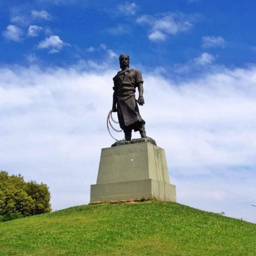

Histoire du Rio Grande do Sul
CULTURE GAUCHA
Le Rio Grande do Sul est certainement l'État brésilien dont l'histoire compte le plus grand nombre d'épisodes de luttes et de guerres. Et cette caractéristique est présente depuis le début de son occupation. Pour comprendre la raison de cet aspect, il faut remonter longtemps, jusqu'à la fin du 17e siècle.
«Le gaucho n'est pas un type ethnique racial, le résultat du croisement éventuel des Portugais et des Espagnols avec les Indiens du Cône Sud de l'Amérique. Il y avait d'authentiques gauchos portugais. D'autres, espagnols, autres, purs Indiens, Guarani ou M'baias. Certains étaient noirs. Dans le Rio Grande do Sul, des gauchos de sang allemand, italien et même des gauchos juifs et des gauchos d'origine arabe ont été connus à travers l'histoire. (Antonio Augusto Fagundes).
Le gaucho se caractérise par son activité, son mode de vie, par ses usages, coutumes, croyances, valeurs, sa culture, bref.
